Using GSKY through the web¶
How to use WPS on the GEOGLAM RAPP Map¶
RAPP Map is the spatial data platform for the Rangeland and Pasture Productivity activity which is part of the Group on Earth Observations Global Agricultural Monitoring (GEOGLAM) initiative. This online tool gives access to information about the state and condition of global rangelands. It provides time-series data on the vegetation and environmental conditions, allowing national and regional tracking of the resources which sustains livestock production. It has been developed, and is currently hosted, by Data61 with the assistance of IT resources and services from the National Computational Infrastructure (NCI), and the AusCover facility. RAPP Map is supported by CSIRO and through funding from the Australian Government’s National Landcare Programme.
Constructing WPS Requests using the GEOGLAM polygon drill¶
The current WPS request for GEOGLAM takes a polygon as input and calcuates the band averages over time for the polygon of interest. Let’s first access the GEOGLAM WPS via the TerriaJS interface:
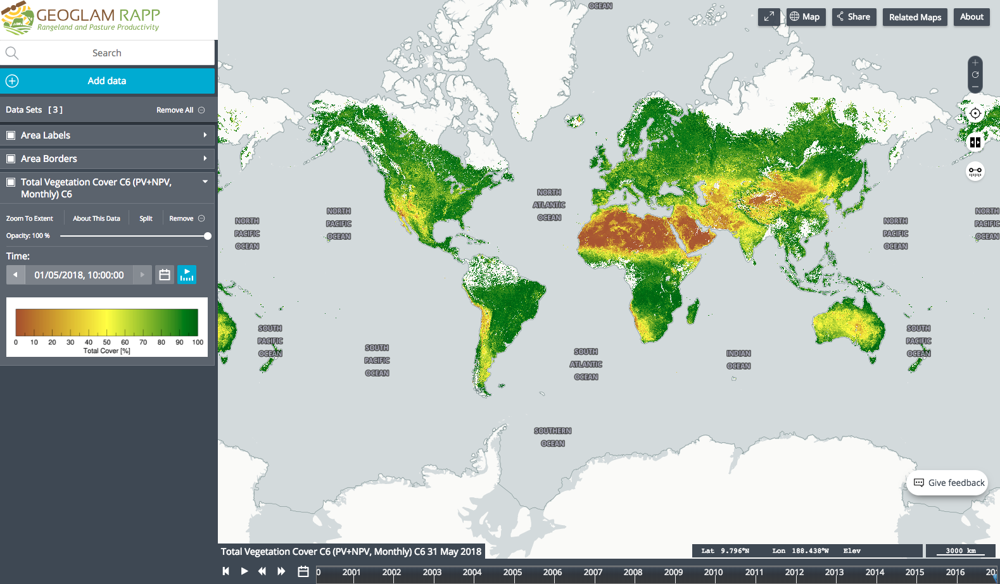To add data to the map, click on the ‘Add data’ tab:
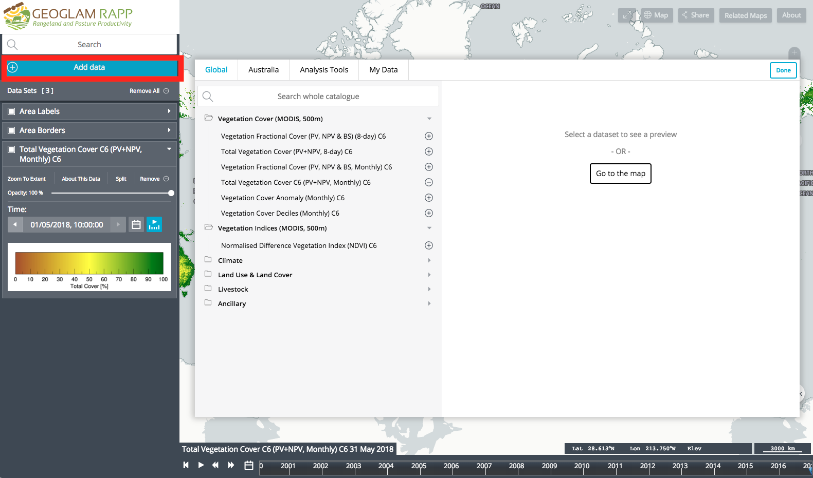Here we can see a number of both global and Australian datasets that can be added to the GEOGLAM RAPP Map. Have a play around and add some of these datasets to the map. As an example we have added the Global Rainfall (5km) dataset:
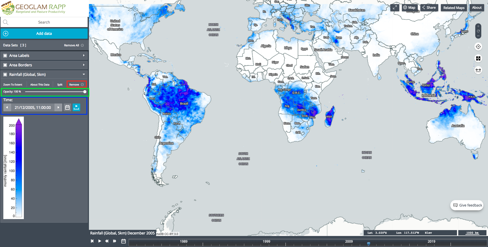You can adjust the opacity (green box) and time (blue box). To remove the dataset from the map, click the Remove button (red box).
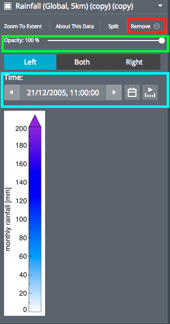Try out the split option where you can select two different dates (one left, one right) and use the split bar to see the changes in data between the specified dates:
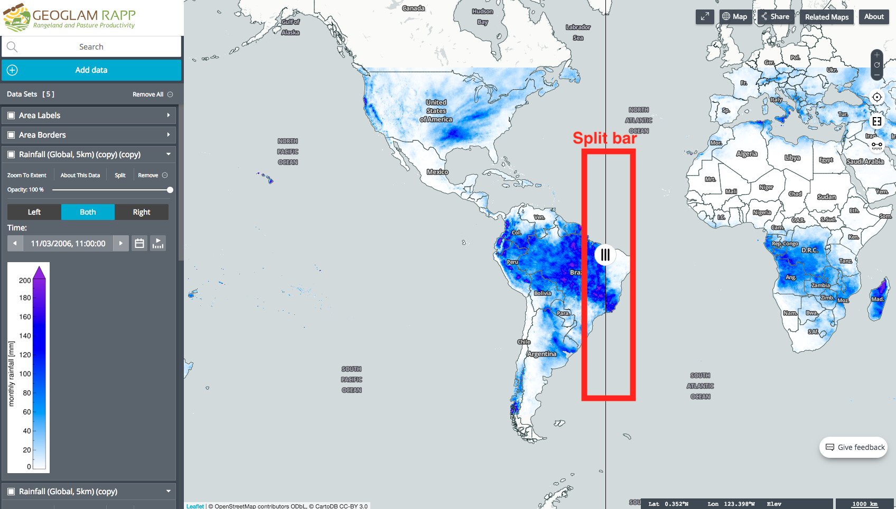Now let’s try using the Analysis Tools. Once again, click on the Add data tab and then Analysis Tools.
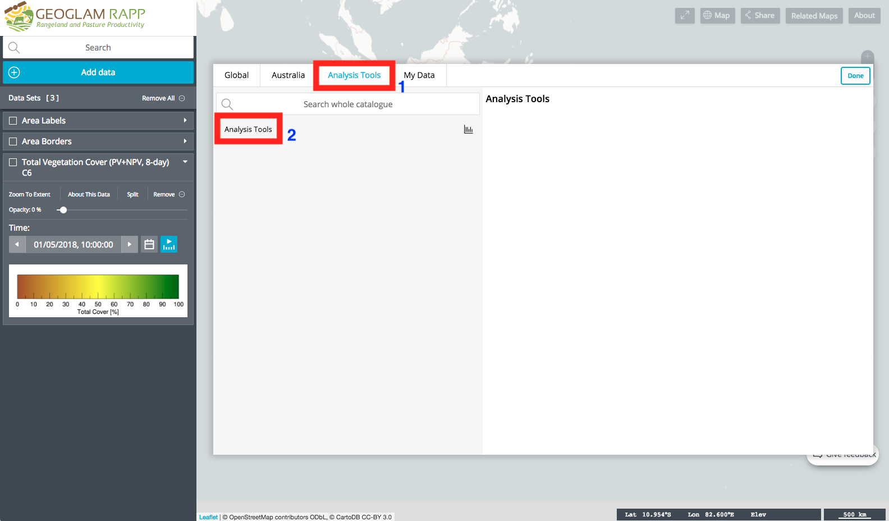These tools can be used to query the Vegetation Fractional Cover layer data. The output is a graph which includes NPV, PV, NPV+PV Total, BS, and Precipitation. For this example, we will draw a polygon over an area we are interested in:
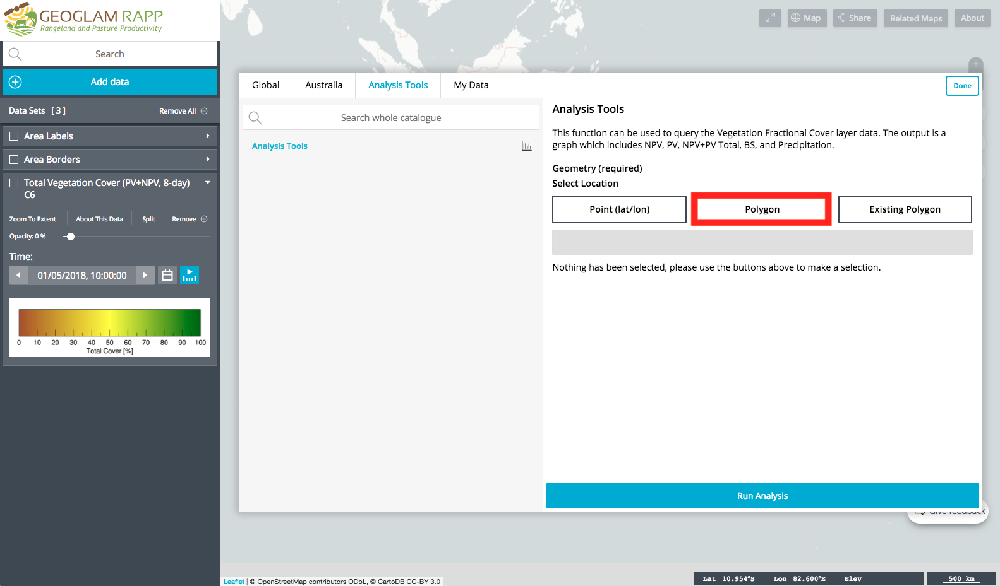Let’s draw a polygon on the map and then click the Done button:
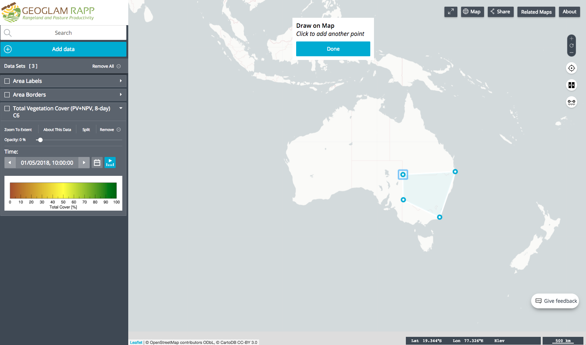This will take you back to the Analysis Tools. Now click the Run Analysis button:
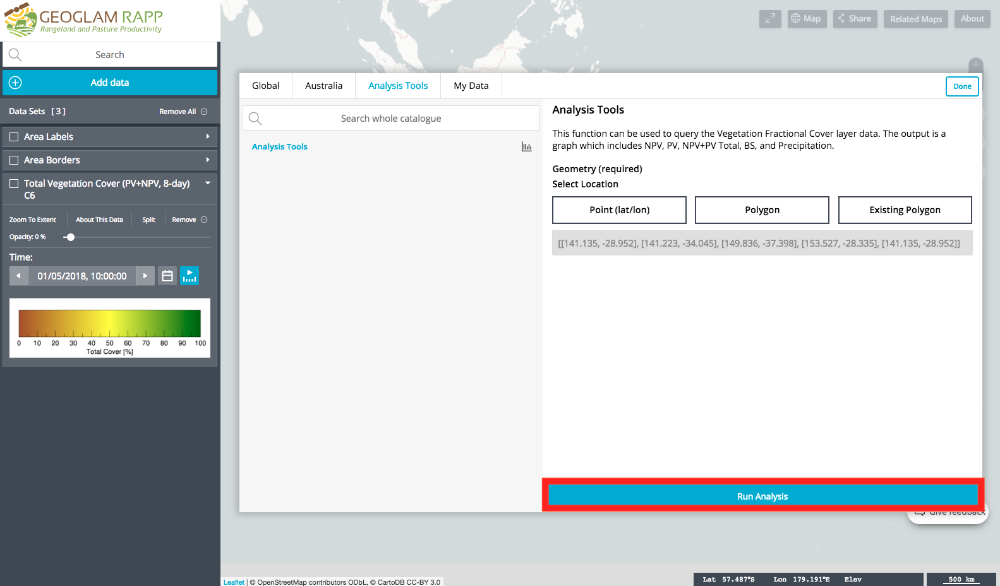Now you can visualise the time series charts of Precipitation, PV, NPV, NPV+PV Total and BS.
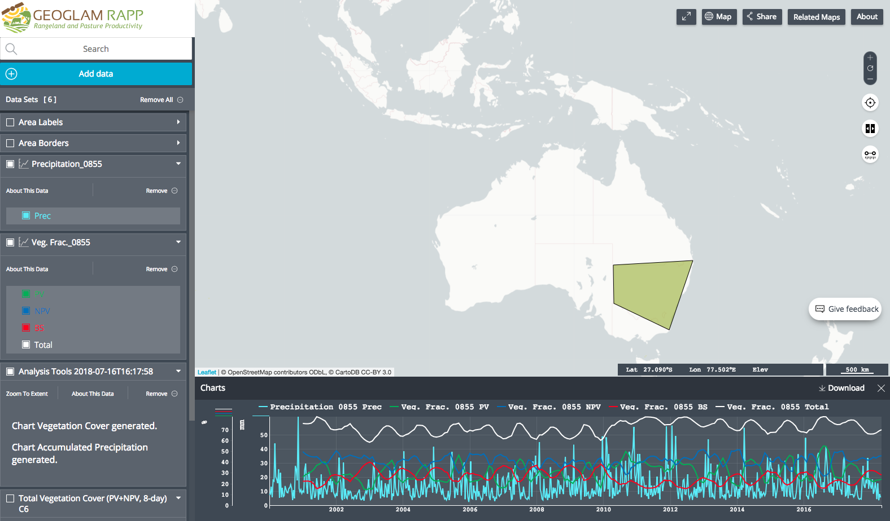To add or remove time series, click on the appropriate legend items (green box). To download the time series as a csv, click the Download button (red box):
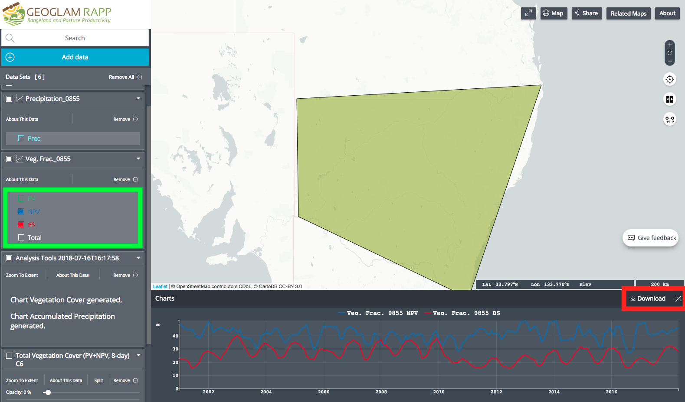